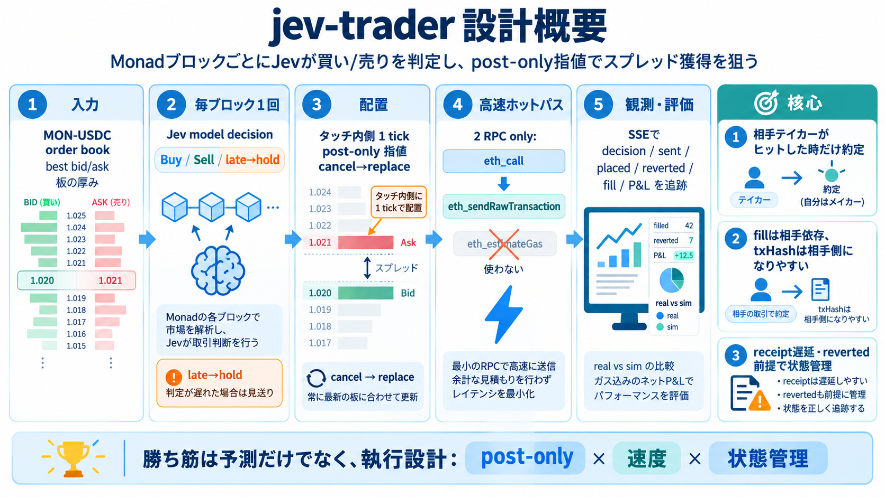

cover
02 / 14
Monad × Jev × Post-only
jev-trader
設計概要
MonadブロックごとにJevモデルが買い/売りを判定し、ポストオンリー指値でスプレッド獲得を狙う取引ボットの全体像。
核心
毎ブロック1回の意思決定（買/売）
狙い
相手がヒットしたときだけ約定（maker志向）
problem
03 / 14
勝ち筋は予測だけでない
「執行が成否を決める」
DEXでは、売買判断よりも“注文の出し方”と“遅延”が収益性を左右しやすい。jev-traderは、スプレッドを取りに行く執行設計を主役に置く。
難しさ
約定（fill）は相手の行動次第
対策
post-only + 1ブロックごとの差し替え
architecture
04 / 14
ブロック境界で完結
毎ブロック1回、同じ側へ
Kuruの MON-USDCオーダーブックを監視し、1Monadブロックにつき1回だけTypeSafeなJevモデルで買い/売りを評価。結果の“同じ側”へポストオンリー指値を更新する。
入力
MON-USDC order book（オーダーブック）
オーダーの厚み・最良気配など
出力
Buy/Sell decision（売買判定）
その側へpost-only指値を再配置
metaphor
05 / 14
熱い場所に“置く”
タッチ内側
1ティック
指値は現在のタッチ（最良気配付近）から1ティック分だけ内側に置く。さらに前回注文をキャンセルし続け、最新の気配関係を維持する。
配置
best（最良気配）から + / - 1 tick
更新
毎ブロック：同じ側を差し替え（cancel→replace）
distinction
06 / 14
約定は相手が起こす
Fillは“あなた”ではない
fillはボットの注文が執行されて発生するのではなく、他者（相手テイカー）が指値にヒットしたときに発生するTradeログから取得する。txHashは相手側になりやすい。
post-onlyの狙い
テイカー化（即約定）を避ける
収益ドライバー
スプレッド×約定頻度（相手依存）
process
07 / 14
300ms級のための削り方
ホットパスは2RPC
ホットループ（判断→注文送信）では、オーダーブック取得の `eth_call` と注文送信の `eth_sendRawTransaction` に絞る。`eth_estimateGas` を避け、受理までの遅延を圧縮する。
Hot path
eth_call → eth_sendRawTransaction
避ける
eth_estimateGas（レイテンシ増の要因）
evidence
08 / 14
ブロック遅延が壊す
receiptは後段、revertedも前提
注文送信はfire-and-forgetで、receiptは後段で受け取る。ブックが先に動いて約定条件が崩れるとrevertedになり得るため、sent/placed/reverted/simの状態管理が重要。
非同期
receipt遅延（後で確定）
リスク
ブック競合・キャンセル競合 → reverted / lost
enumeration
09 / 14
遅延に負けない選択
Decision
が間に合わない
モデルがブロックの期限に間に合わない場合はholdを出す（late: true）。誤ったタイミングでの注文投稿を避け、不整合と機会損失を抑える。
i. 判断
Jev評価が期限内か判定
ii. 出力
間に合う→ポストオンリー投稿
iii. 例外
間に合わない→hold（投稿しない）
architecture
10 / 14
可観測性をSSEで
ブロック×注文×会計を追う
SSEでブロック単位の状態、注文状態（sent/placed/reverted/sim）、約定イベント（fill）、P&Lをストリーミング。ダッシュボードから“遅延・競合・ログ取得”の切り分けをしやすくする。
Stream
SSE（Server-Sent Events）
追跡対象
decision / order state / fill / P&L
distinction
11 / 14
simは“現実寄り”
dry run：実ブック×実判断
PRIVATE_KEY未設定の場合、実約定はしないがオーダーブックや判断は実データに近い形で試す。現実性は高い一方、実ガス消費・実約定競合は完全再現できない。
実行（dry）
実ブック + 実判断（疑似約定）
限界
ガス消費・競合の差が残る
comparison
12 / 14
評価観点：執行を含める
real vs sim を検証
モデル精度だけでなく、約定頻度・スプレッド分布・reverted/lost比率・遅延要因・ガスコスト込みのネット期待値を体系的に検証する必要がある。モデル×執行×流動性の相互作用が支配的になりやすい。
Must check
real vs simの乖離、約定率、最大ドローダウン
Must check
reverted/失注の原因（遅延・競合・キャンセル）
closing
13 / 14
まとめ：勝ち筋は設計
post-only
× 速度 × 状態管理
jev-traderは「毎ブロック1回のJev判定」と「タッチ内側へのpost-only差し替え」を軸に、ホットパス2RPCでレイテンシを抑え、SSEで状態・fill・P&Lを可観測化する。
戦略
相手テイカーが来たときにスプレッドを獲得
運用
late→hold、reverted前提の状態管理
検証
ガス込みネットP&Lでreal vs sim差を確認
References slide: 本デッキは提示されたREADME抜粋内容のみを圧縮要約しています。
REFERENCES
14 / 14
References
No references found